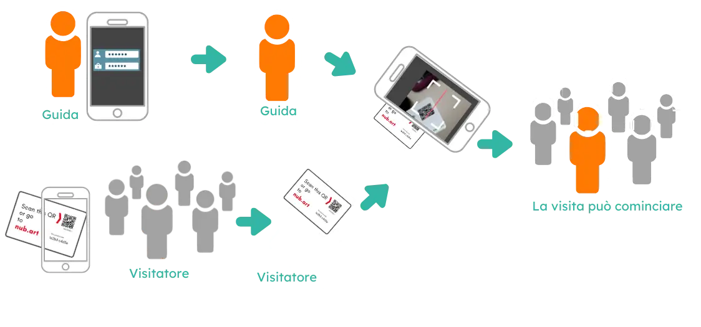

Guida un gruppo con lo smartphone utilizzando nient'altro che Internet.
Stai guidando un gruppo in un ambiente rumoroso o in un luogo che richiede di parlare a bassa voce?
Il prezzo di un sistema di radio quide wireless tradizionale ti ha intimorito?
Nubart® Live è quello che ti serve. Si tratta di una soluzione economica basata su tecnologia web e nata per essere usata direttamente dai telefoni cellulari dei membri del gruppo, senza la necessità di scaricare un'applicazione. Nubart Live è estremamente facile da usare, anche per i non nativi digitali.
La card consente la connessione tra i visitatori e la guida turistica. Il tuo smartphone funge da trasmettitore e gli smartphone dei visitatori da ricevitori. È così semplice.
C’è un modo migliore di guidare gruppi, senza attrezzature
Sistemi radioguida tradizionali
- Le cuffie ingombranti devono essere pulite dopo ogni utilizzo
- Attrezzature costose da acquistare, noleggiare o mantenere
- I visitatori internazionali si sentono esclusi
- Scarsa flessibilità per visite occasionali
- Batterie, ricariche e logistica necessarie
Nubart LIVE
- Nessuna app da installare, nessun dispositivo da disinfettare
- I tuoi visitatori scansionano un codice, senza complicazioni tecniche
- Traduzione AI opzionale in oltre 35 lingue
- Domande silenziose per visite più fluide
- Acquisto unico delle card, senza parco dispositivi
Da 154 € (pagamento unico, nessun abbonamento) · Vedi tutti i prezzi →
Come funziona Nubart LIVE - principio di base

Vuoi scoprire come funziona Nubart LIVE per le tue visite?
Richiedi un kit di prova gratuito
Perché ogni partecipante ha il proprio codice
A differenza dei sistemi con QR condiviso o PIN, con Nubart LIVE ogni persona riceve un codice di accesso unico e non trasferibile.
Tutti pronti subito: Nessun assembramento attorno a un unico dispositivo. Ognuno scansiona il proprio codice e tutti sono connessi nello stesso momento.
Indipendente e senza stress: Connessione persa? Basta scansionare di nuovo, senza interrompere il tour né chiedere aiuto alla guida.
Controllo totale per la guida: Solo i partecipanti invitati possono accedere. Nessun ascoltatore indesiderato e nessuna interferenza tra gruppi.
Non potrebbe essere più semplice
Perché comprare radioguide quando tutti hanno uno smartphone?
Facile da usare
Sia i visitatori che la guida scansionano il codice QR sulle card - pronto! Non è necessario registrarsi o scaricare un'app (solo la guida deve effettuare il login).
Conveniente
Il nostro pacchetto base con 500 cards costa meno dell'affitto di un sistema di radioguide. Con 500 cards ne avrai a sufficienza per molte visite.
Anonimo
I vostri visitatori non devono fornire alcuna informazione personale per l'utilizzo - Nubart Live è completamente anonimo!
Traduzione IA
Gestisce un gruppo multilingue? Nessun problema! Basta aggiungere la nostra funzione di traduzione in tempo reale e tutti potranno seguire la conversazione, indipendentemente dalla loro lingua madre.
Learn more
Con Question Mode
I visitatori possono fare domande alla guida in qualsiasi momento senza interromperla: la guida può accedere all'elenco delle domande e rispondere come meglio crede.
Vedere come funziona
Facile da trasportare
Una custodia tradizionale per radioguide è pesante da trasportare e allettante per i ladri, le nostre cards sono leggere e non richiedono spazio.
Igienico
Le radioguide devono essere disinfettate dopo ogni utilizzo, le nostre card no!
Ecologico
I dispositivi generano rifiuti elettronici. Le nostre card sono stampate su cartone FSC a compensazione di CO2.
Consulti i casi d'uso di Nubart Live
Casi d'uso

Visite guidate alla fabbrica
Mostri la sua fabbrica ai visitatori senza spendere troppo:
Semplicemente utilizzando il microfono dello smartphone stesso, Nubart Live è ideale per le visite guidate in ambienti rumorosi come un impianto di produzione.

Percorsi in città
Nubart Live è un sistema semplice e conveniente per i percorsi urbani:
La voce della guida può essere ascoltata bene nonostante il traffico, e non importa se i partecipanti si allontanano dalla guida.

Accessibilità per gli ipoudenti
Con Nubart Live può offrire visite guidate più inclusive:
Le persone con problemi di udito possono sentire molto meglio utilizzando uno smartphone con le cuffie, in quanto le isola dal rumore di fondo e permette di regolare il volume, oltre ad altri vantaggi.
Perfetto per visite a fabbriche e impianti
Supera le sfide delle visite alle fabbriche
Il rumore degli ambienti di produzione rende difficile la comunicazione. I sistemi di audioguida tradizionali sono costosi da comprare o noleggiare, richiedono una manutenzione costante e non riescono a gestire facilmente gruppi multilingue.
Perché le fabbriche scelgono Nubart LIVE:
- Eliminazione del rumore: usando un microfono USB unidirezionale per la guida, si ottiene un audio chiaro anche in ambienti rumorosi.
- Formazione e inserimento dei dipendenti: forma i dipendenti internazionali nella loro lingua madre
- Privacy dei visitatori VIP: partecipazione anonima, perfetta per visite riservate
- Nessuna restrizione di frequenza: funziona in tutto il mondo tramite Internet, a differenza dei sistemi radio con licenza
- Uso occasionale: perfetto per visite spontanee di investitori, non per visite quotidiane
Casi d'uso comuni nelle fabbriche:
- Visite di investitori e parti interessate
- Orientamento per i nuovi dipendenti e formazione sulla sicurezza
- Visite dei clienti allo stabilimento
- Dimostrazioni alle fiere commerciali

Organizzi visite allo stabilimento?
Richiedi un kit di prova gratuito per provarlo nel tuo stabilimento.
Richiedi un kit di prova gratisAggiungi l'interpretazione simultanea con l'AI
Traduzione simultanea opzionale basata sull'AI

Guidi tour con visitatori internazionali? Con il nostro add-on AI opzionale, una sola guida può ora gestire un gruppo multilingue, senza assumere interpreti.
Il nostro add-on di traduzione AI funziona perfettamente con Nubart LIVE:
- I partecipanti scansionano il loro codice QR e selezionano la lingua preferita tra 35+ opzioni
- Possono ascoltare nella lingua originale per sentire direttamente la voce della guida
- Oppure ricevere la traduzione AI in tempo reale come testo e audio sul loro schermo
- Le domande vengono tradotte automaticamente se i partecipanti scrivono nella propria lingua
Un solo tour. Più lingue. Nessuna guida aggiuntiva necessaria.
Demo di Nubart LIVE con add-on di traduzione simultanea
Riproduci il video con audio
Prezzi & Calcolatore dei costi
Prezzi semplici e trasparenti. Calcola il tuo preventivo in pochi secondi.
Schede con codice QR
Acquisto unico · guide illimitate · nessun abbonamento

PDF · stampa e usa
Consegnato in max. 1 giorno
+ €1,50/codice · min. 50

500 schede in cartoncino prestampate
Spedito in 2-3 giorni

3.000+ schede · il tuo brand
Spedito in 30 giorni
sconti per volume
Add-on Traduzione IA
- Oltre 35 lingue, audio e testo in tempo reale
- Prezzo per stream della guida, non per lingua
- Ascoltatori illimitati — nessun costo per visitatore
- Fatturato solo mentre la guida parla con la traduzione attiva
- La guida attiva/disattiva in qualsiasi momento
Libreria multimediale
La guida invia contenuti multimediali agli schermi dei partecipanti tramite telecomando. Una libreria per ogni percorso.
La tua stima dei costi
Calcola il tuo preventivo Nubart LIVE in pochi clic
Step 1 di 4
Quale pacchetto di schede ti serve?
Step 2 di 4
Hai bisogno di una libreria multimediale?
Una libreria multimediale consente alla guida di inviare immagini, video o documenti sugli schermi dei partecipanti durante il tour tramite telecomando. Puoi creare una libreria diversa per ogni percorso.
Step 3 di 4
Hai bisogno dell'add-on di traduzione IA?
Traduzione in tempo reale in oltre 35 lingue. €39 per ora di stream (per guida con traduzione attiva).
È la prima volta che usi la traduzione IA di Nubart LIVE?
La tua stima
Riepilogo dei costi
La tua richiesta di preventivo è pronta
Copia il testo qui sotto e incollalo nel tuo client di posta, oppure usa il pulsante Apri nell'app di posta se ne hai uno configurato.
Fare domande alla guida? Nessun problema
La maggior parte dei sistemi di guida di gruppo standard (radioguide) non permette ai visitatori di fare domande.
Alcuni sono bidirezionali e permettono al partecipante di fare una domanda che l'intero gruppo sentirà. I partecipanti timidi faranno raramente uso di questa opzione, mentre quelli più audaci potrebbero interrompere il tour con domande interminabili, sminuendo l'intera esperienza.
Nubart Live offre una soluzione non invasiva in cui le domande vengono accumulate sullo smartphone della guida in modo che possa rispondere al momento opportuno.
Se hai preso il modulo di traduzione simultanea, le domande verranno tradotte automaticamente.
Partecipanti

Guida

Si fidano di noi


Domande frequenti
Domande frequenti
Primi passi
Durante il tour
Se succede, basta dare una di quelle schede già scansionate alla persona in ritardo Tutto qui: quella persona potrà unirsi al gruppo subito semplicemente scansionando il codice QR.
Una volta chiuso il gruppo, potrai riutilizzare quei biglietti extra per la prossima visita. I biglietti non sono più trasferibili una volta che sono stati scansionati da un partecipante, non quando vengono scansionati dalla guida.
La latenza dipende dalle prestazioni dello smartphone, dalla qualità della connessione e dal fatto che i partecipanti usino lo stesso operatore di telefonia mobile.
Tuttavia, se la guida parla a bassa voce, la latenza è quasi impercettibile: i partecipanti sentiranno principalmente la voce amplificata dal proprio smartphone piuttosto che l'eco della voce naturale della guida.
Il gruppo rimarrà connesso, ma in attesa mentre parli. Quando finisci la chiamata, torna al browser. Se alcuni partecipanti mostrano una luce rossa invece che verde, premi "ricarica": tutti si ricollegheranno senza bisogno di riscansionare i loro codici QR.
Nota: su Android, se ti dimentichi di silenziare prima di rispondere, i partecipanti possono sentire la tua parte della conversazione. Su iPhone, non sentiranno nulla.
Complemento di traduzione con IA
Dai un'occhiata alle nostre istruzioni per maggiori informazioni.
Anche se Google Translate può riprodurre brevi frammenti audio, non è progettato per fornire una trasmissione audio continua. Ogni visitatore deve gestire l'app individualmente, accendere e spegnere il microfono, attivare la riproduzione e leggere il breve testo che appare sul proprio schermo. I tempi, le interruzioni e i ritardi variano da persona a persona, creando rapidamente confusione in un contesto di gruppo.
Nubart LIVE è pensato apposta per visite guidate e tour in fabbrica. Una guida parla una volta al microfono e tutti i partecipanti ricevono la stessa trasmissione audio sincronizzata sui loro smartphone, senza bisogno di scaricare nessuna app.
Con il componente aggiuntivo opzionale di traduzione AI, la traduzione è collegata direttamente alla trasmissione audio in diretta della guida. I partecipanti devono solo scegliere la loro lingua preferita e seguire la visita insieme, invece di usare un'app di traduzione separata per ogni persona.
In breve: Google Translate è perfetto per chi lo usa da solo; Nubart LIVE è pensato per esperienze guidate condivise e sincronizzate.
Dettagli tecnici
Comunque, questo non ha alcun effetto sui membri del gruppo: per loro, il consumo della batteria non è molto maggiore rispetto a quando ascoltano un podcast o un audiolibro. Ad esempio, un'ora di utilizzo continuo consuma l'8% della batteria di un telefono Android di 4 anni.
Nubart LIVE funziona con qualsiasi dispositivo hotspot standard e qualsiasi SIM — sei libero di scegliere l'hardware e il piano dati più adatti al tuo budget e alla tua destinazione. Questo approccio è particolarmente utile quando il tuo gruppo include visitatori internazionali che potrebbero incorrere in costi di roaming, quando i tour si svolgono in aree con copertura mobile scarsa, oppure semplicemente quando vuoi garantire una connessione stabile indipendentemente dal piano tariffario o dall'operatore di ciascun partecipante.
Se organizzi tour di più giorni o gruppi numerosi con la traduzione attiva, ti consigliamo di dimensionare il tuo piano dati di conseguenza — oppure di scegliere semplicemente un'opzione illimitata, che di solito costa solo qualche euro in più e ti evita qualsiasi preoccupazione di rimanere senza dati durante il tour.
Schede
Tu ci mandi le immagini, i loghi e gli altri elementi che vuoi mettere sul tuo biglietto e il nostro designer ti darà diverse proposte di design tra cui scegliere.
Dai un'occhiata ai nostri prezzi per Nubart LIVE
Se vuoi che le tue carte abbiano un design personalizzato, l'ordine minimo è di 3000 unità. Dai un'occhiata ai nostri prezzi per Nubart LIVE
Nessun collo di bottiglia all'inizio del tour: Invece di 25 persone in fila per scansionare un piccolo schermo del telefono, ogni partecipante scansiona la propria tessera in autonomia. La guida può persino pre-scansionare le tessere prima di distribuirle, formando il gruppo in anticipo.
Ripristino della sessione: I turisti abbandonano continuamente il browser per scattare foto, controllare messaggi o usare altre app. Con un codice digitale condiviso, perdono la connessione e devono interrompere la guida. Con una tessera Nubart LIVE, riscansionano semplicemente e si riconnettono all'istante, senza bisogno dell'assistenza della guida.
Controllo degli accessi: A differenza dei sistemi in cui chiunque conosca un PIN o veda un QR code può unirsi, Nubart LIVE dà alla guida il pieno controllo su chi fa parte del gruppo. Nessun ascoltatore non invitato, nessuna confusione tra gruppi di visita sovrapposti nella stessa location.
Hai bisogno di un'opzione senza tessera per eventi spontanei o occasionali? Chiedici dei nostri fogli di QR code stampabili — stessi codici unici, pronti in pochi minuti.
Prezzi
Pronto a trasformare le tue visite di gruppo?
Prova Nubart LIVE senza rischi. Ottieni un kit di prova con 30 minuti di traduzione IA gratuita.
Richiedi un kit di prova gratuitoNessuna carta di credito richiesta Supporto completo durante il test